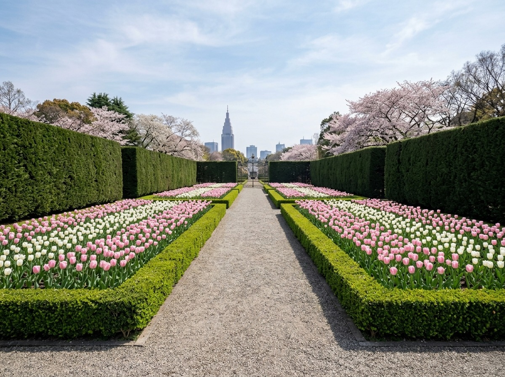
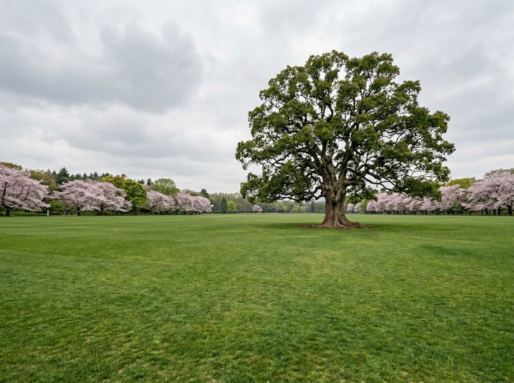
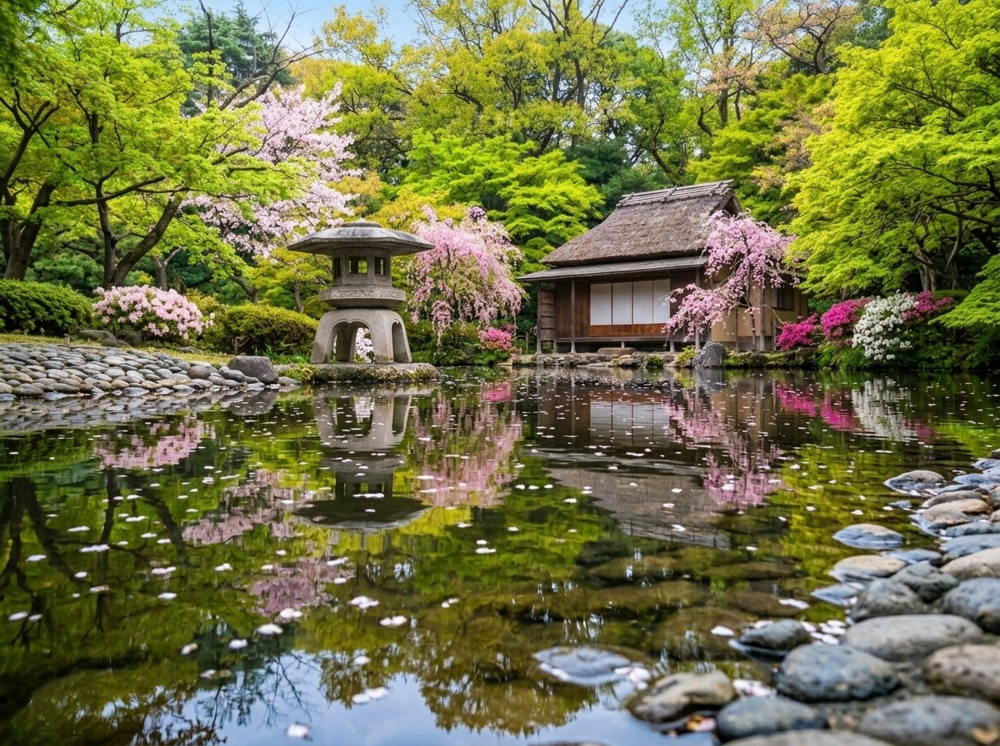

Most people walk into this place and think they understand it.
A large park.
Quiet. Beautiful. Complete.
But this garden was never one idea.
It is three.
And they were never meant to agree.
Most people walk into this place and think they understand it.
A large park.
Quiet. Beautiful. Complete.
But this garden was never one idea.
It is three.
And they were never meant to agree.

The first landscape you meet speaks in straight lines.
Symmetry. Balance. Control.
Nothing is accidental.
Trees are shaped. Paths are decided.
This is not nature.
It is intention.
A belief that the world can be understood and corrected.

Walk a little further, and the lines disappear.
The space opens.
Curves replace edges.
It feels natural.
As if no one planned it.
But that is the design.
An effort to remove effort.
To make something created feel like it was always there.

And then, almost quietly, the pace changes.
The path bends.
Not freely, but deliberately.
Every step reveals what was already decided.
Water. Stone. Sky.
Nothing is random.
But nothing announces itself.
This way of seeing is older than the others.
It does not argue.
It waits.
This is not a park.
It is a conversation.
Three different answers to the same question.
What should nature be?
Controlled.
Released.
Or observed.
No one decided.
So all three remained.
Most people notice the blossoms.
The colors. The season.
And then they leave.
Because the surface is enough.
Until it isn’t.
If you look carefully,
there is a moment where something shifts.
Not suddenly.
But clearly.
The place changes before you realize it.
That is where the story is.
Not in the gardens themselves,
but in the space between them.